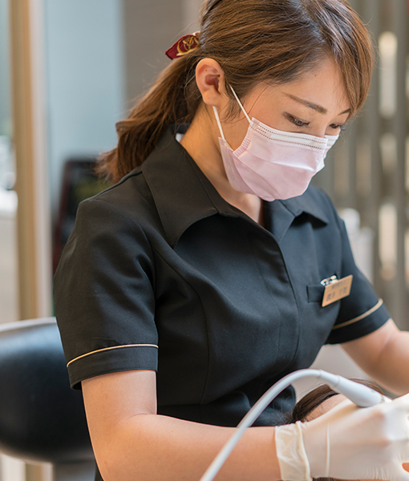
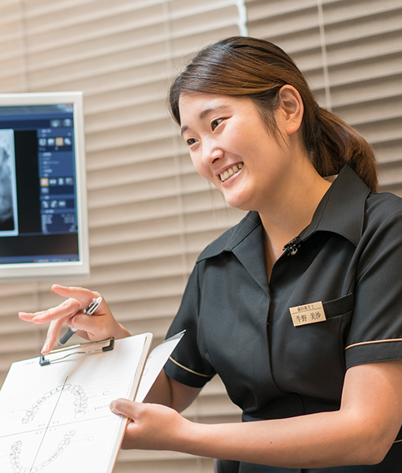
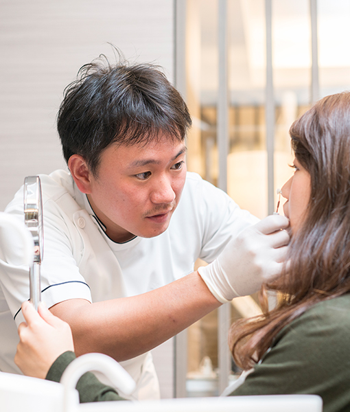

むさしのデンタルクリニックについて
武蔵境から徒歩4分のむさしのデンタルクリニックでは、完全個室の専用予防ルームをご用意し、予防歯科に力を入れています。
治療室とは分かれているため、リラックスした雰囲気のなか、お口のケアを出来る点が特徴です。
患者さんからも歯医者への苦手意識が無くなり、気軽に来られるようになったと好評をいただいております。
また、当院はマイクロスコープを早い段階に導入し勉強会などにも積極的に参加してきました。
そのため、根管治療に強みと実績があり、常により良い治療を提供できるよう励み、
おかげさまで地元武蔵境だけではなく、高尾、橋本、三鷹などからも患者さんが来院するようになりました。
お口の事でお困りの際は、どんなことでも構いません。
当院までお気軽にご相談ください。
歯科治療の痛みをなるべく感じさせないように、
痛くない治療を目指して、様々な工夫をしています。
麻酔注射自体が痛くないように麻酔の前には
必ず表面麻酔という塗る麻酔薬を使い、
痛みが極力少なくなるようにしています。
注射針は細いほうが痛みを感じにくくなりますので
麻酔注射針は非常に細い針を使っています。
注射をされた事がわからない患者さんも少なくありません。
また、状況に応じて電動麻酔注射器も使っております。
麻酔液を適切な速度でコントロールし、
かつ緩やかに入れる事で、より痛みを感じにくくなります。
これらの手法によって、麻酔注射時の痛みはほとんどありませんのでご安心ください。
これらの方法に限らず、より痛みの少ない治療をする歯医者を目指しております。
詳しくはこちら


歯科治療の痛みをなるべく感じさせないように、
痛くない治療を目指して、様々な工夫をしています。
麻酔注射自体が痛くないように麻酔の前には必ず表面麻酔という塗る麻酔薬を使い、
痛みが極力少なくなるようにしています。
注射針は細いほうが痛みを感じにくくなりますので麻酔注射針は
非常に細い針を使っています。
注射をされた事がわからない患者さんも少なくありません。
また、状況に応じて電動麻酔注射器も使っております。
麻酔液を適切な速度でコントロールし、
かつ緩やかに入れる事で、より痛みを感じにくくなります。
これらの手法によって、麻酔注射時の痛みはほとんどありませんのでご安心ください。
これらの方法に限らず、より痛みの少ない治療をする八戸の歯医者を目指しております。
詳しくはこちら

予防歯科とは、虫歯になってから治療を行うのではなく、
虫歯になる事を防ぐ、予防を大切にすることです。
生涯を通じて健康な歯でいるために、歯や口腔内の健康を維持するためにも
定期的な健診がとても大切です。
当院では予防歯科に力を入れて、なるべく虫歯にならないように
指導・治療を行っています。
詳しくはこちら

診療科目
-
むし歯治療
歯科治療に対して、「怖い」「痛い」というイメージをお持ちの方は多いと思います。少しでも早い段階での治療が大切と分かっていても、不安感や恐怖心のため不調を我慢し続けているという方もいらっしゃるのではないでしょうか。むさしのデンタルクリニックでは、極力痛みの少ない治療を心がけ、不安を和らげるように努めています。
-
予防治療
むし歯や歯周病は早期発見・早期治療が大切だと言われていますが、最も重要なのは“ならないこと”。ですが、自己流のケアではどれだけ気を付けていても、磨き癖や磨き残しなどで知らず知らずのうちにむし歯や歯周病になっていることもあります。一番効果的な予防は、歯科クリニックで定期検診を受けていただくことです。当院では専門の検査機器を使って、きめ細かくお口の状態をチェック。日常生活におけるケア方法をアドバイスします。
-
歯周病治療
歯槽膿漏とも呼ばれる歯周病には、40歳以上の約8割が感染していると言われています。歯を失ってしまう原因の1位で、口の中が不衛生な状態によって起こる生活習慣病の一つです。主な原因は、歯磨きをしなかったり、磨き方に問題があること。きちんと磨けていないと歯垢や歯石がたまってしまうからです。それら、歯垢や歯石の中に住みついた細菌が毒素を出すことで歯茎に炎症が起こり、いずれは歯を支えている骨が溶け、歯が抜けてしまいます。
-
矯正歯科
矯正歯科は“歯並びを良くする”ための専門的な治療です。きれいな歯並びは見た目の美しさだけではなく、健康にも関わってきます。正しいかみ合わせができていないと、きちんと食べ物を咀嚼できなかったり、顎に痛みが出るおそれもあるのです。歯や口元を正常に整えれば、自分でケアがしやすくなり、結果的にむし歯や歯周病の予防につながります。口元の美しさ、健康維持のため、当院の矯正歯科をご検討ください。
-
審美歯科・ホワイトニング
審美歯科の目的は、きれいな歯並びや白い歯を持つことにより、他人の印象や本人の自信にもつながり、そのための治療を行うといえるのです。機能的な治療はもちろんのこと、その上で、積極的に美しい歯を手に入れようという動きが審美歯科といえます。美しく健康な歯や歯肉を作ることが目的です。
-
インプラント
インプラント治療は、まず歯が抜けた部分に人工の歯根（チタン製など）を植え、顎の骨に固定。そこに人工の歯を被せてかみ合わせを作っていきます。入れ歯が嫌な方、治療のために隣の歯を削りたくない方、天然に近いかみ合わせを回復させたい方に有効です。ただ、治療に不安を抱えていらっしゃる方が多いのも事実。当クリニックでは患者さまの立場にたった分かりやすい説明と安全性を重視。安心して治療にのぞんでいただけるよう取り組んでいます。